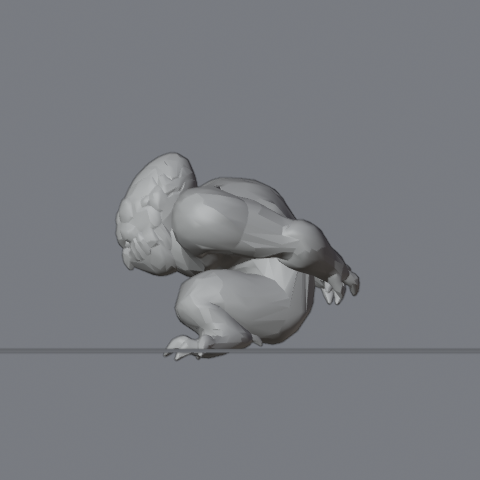
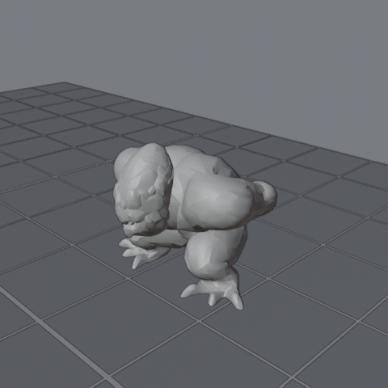
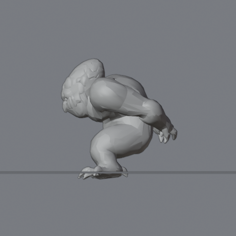
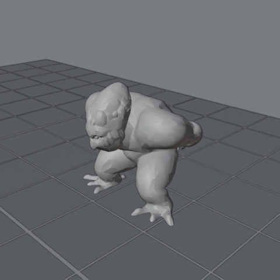
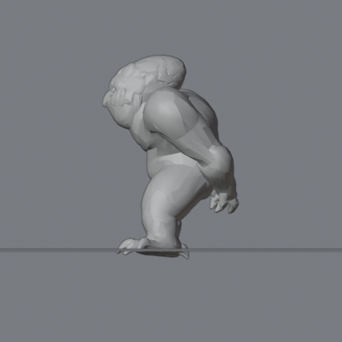
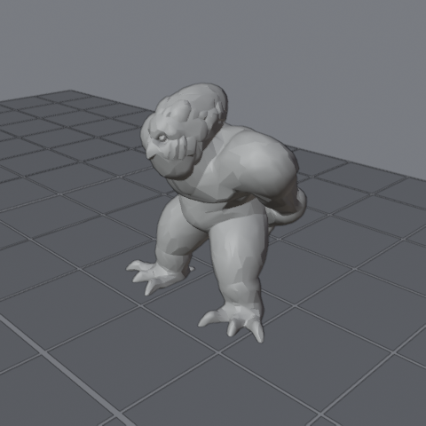
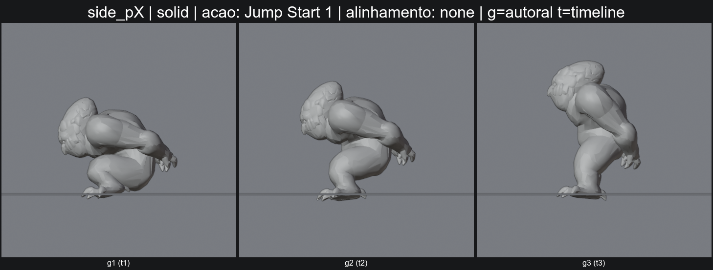
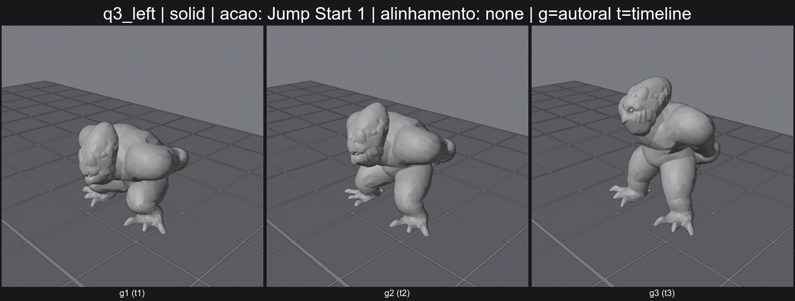

C:\Users\zerke\OneDrive\Área de Trabalho\Arenamon\chars\Eggo\eggo pulo v9 fases.blend | action: Jump Start 1 | engine: BLENDER_WORKBENCH | tamanho: 480 | offset: 0 | Workbench headless, NAO e o viewport real do Blender. Camera, luz e grade de chao sao proprias da ferramenta.
blend_untouched: True | sha256: 5d8fde61910d67de5441d67d113c6989f7378f11c68b8b216fa26de86276c08b
Vista Modo Frame

side_pX solid g1
q3_left solid g1
side_pX solid g2
q3_left solid g2
side_pX solid g3
q3_left solid g3

{}